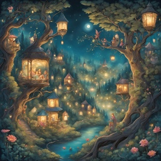
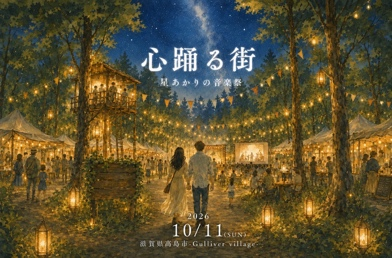
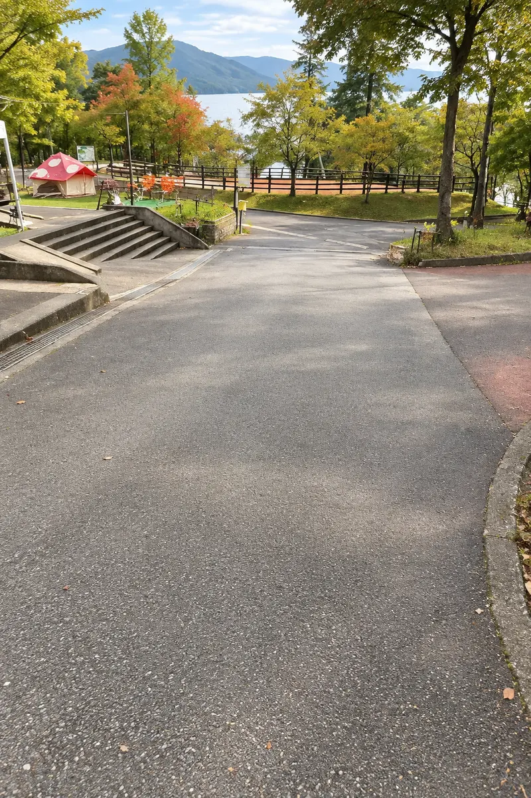

PRIMARY / SECONDARY
FOCUS / DISABLED
「心踊る街」の空気を、そのまま手のひらへ。
触れて、切り替えて、確かめられるUI部品集。
PRIMARY / SECONDARY
FOCUS / DISABLED
MAP CONTROLS
地図を遮らない、丸い操作ボタン。
CATEGORIES / TAP TO SELECT
選んだカテゴリを、緑の面で伝える。
最初は「自分だけ」。公開は自分で選ぶ。
PLACE PINS
名前はいつも見える。選ぶと、小さな目印が現れる。
MEMORY LIGHTS
NEXT STEP

木々のそばで、ひと休み。
あたたかい一杯が待っています。
今日の想いを、未来の自分へ。
この場所に、あなたの記憶を残します。
見られるのは、自分だけ。
まだ、この場所の記憶はありません。
あなたの「心が動いた瞬間」を残してみませんか。
認証から、名前と自分の姿を決めるまで。
記憶をつないで、街を歩こう。
認証画面の見本です。ログインは行いません。
確認内容・同意文は正式な内容を組み込むための見本です。
いま、どこまで進んだか。
小さな区切りで、迷わず街へ。
図柄は配置用。実装時に既存アバターへ差し替え。
自分の姿を整えたら、次へ。
編集を離れるときは、未保存の確認を表示。
移動先と、戻る場所をいつも明確に。
見出しと戻る操作を、一つの高さに。
街のマップを表示中〔見本〕
戻った先が分かる、短い言葉。
条件を選んだら、件数で知らせる。
現在地・精度・経路・権限。歩いているときほど、短く明確に。
拡大縮小はピンチ操作を想定。
数値は見本。判定のしきい値は実装仕様に合わせる。
点は現在地。円は位置の誤差範囲。
向きを、小さな扇で添える。
重なった場所は、件数にまとめる。
木立の小道を通って向かいます。
ここで、ひと休みしませんか。
位置情報がずれている可能性もあります。
形とラベルを添え、色だけに頼らない。
現在地を使って、近くの場所と道順をご案内します。
AR案内にはカメラを使用します。周囲を確かめ、安全な場所で操作してください。
探す・絞る・気になる場所を覚えておく。
検索履歴はありません。
日付・予定はレイアウト用の架空データです。

13:00–14:00 / 灯りのステージ
表示状態の見本です。
気になる場所を残しておけます。
周囲の状況によって誤差が生じます。地図と周囲の目印を確かめてください。
「自分だけ」は本人用。「みんな」は公開された記憶の表示に使う見本です。
画面と操作のデザインを確認するための見本です。データの送信・保存は行いません。
投稿前から見返すときまで。大切な操作には、確認の余白を。
2枚の見本写真
木漏れ日の下で、
笑い声がほどけた。
公開された記憶を共有する見本。
コピー対象は、この部品集のURLです。
削除前に、対象と操作を確認します。
自分の情報と、通知・公開範囲を管理するための部品。
スイッチの表示見本です。端末設定は変更しません。
森の音楽会が、まもなく始まります。
街へようこそ。ゆっくりお楽しみください。
配信内容は架空の見本です。
ログアウト前に確認するダイアログ。
実際のログイン状態は変更しません。
読み込みや通信の不調でも、次にできることが分かるように。
内容が現れる場所を、先に示す。
通信が戻ったら、もう一度お試しください。
別の言葉や、少し広い範囲で
探してみませんか。
ただいま準備を整えています。
時間をおいて、もう一度お試しください。
ログイン状態を確認できませんでした。再ログインしてお進みください。
軽い操作は、すぐ取り消せるように。
現実の道から、街のもう一つの表情へ。入る・歩く・見つける・居合わせる、4つの場面をつなぐ。
昼は、色と輪郭で場所を見つける。
夜は、地面に流れる光をたどる。
景色が変わっても、同じ場所へ。
泉も、熾火も、音の波も。
昼はマットな形、夜は光。その場所らしさを保ちながら、時間で素材を変えます。
昼夜は日本時間で自動切替。手動でも選べます。
写真上の体験見本。カメラ・GPSは未接続です。
距離・場面・場所の名前はデザイン確認用です。

情報は上辺へ。
人と景色を見る中央を空ける。
近づいたときだけ、
名前と気配を結びつける。
方角が外れたら、
画面の端にだけ手がかりを。
不確かなときは、地面の光を消す。
足元から少し先へ、ゆっくり向けて。
物体の輪郭より先に、接点をつくる。
自動は日本時間 6:00〜18:00が昼
#173E35#EDC579#FAF8EF#89A9A0この場所、この日、この人と。
見出しは Noto Serif JP。操作と説明は Noto Sans JP。
情景を伝える明朝体と、読みやすいゴシック体。